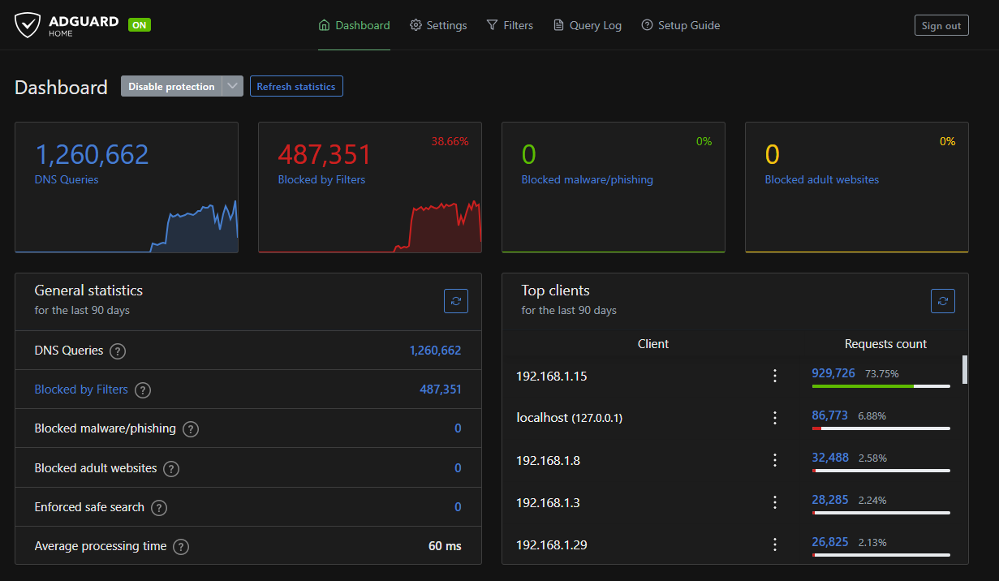

My First Post
Introduction#
In this post, I will show how I deployed AdGuard Home in my home lab environment to achieve network-wide ad-blocking and DNS-level filtering. My homelab runs on Proxmox, with AdGuard Home inside a Docker container on a Linux virtual machine.
This setup allows all devices on my network to benefit from ad-blocking, tracking protection, and enhanced DNS management without installing software individually on each device.
Why AdGuard Home?#
AdGuard Home is an open-source, self-hosted network-wide ad-blocker and DNS resolver. Its key benefits include:
- DNS-level ad-blocking for all devices
- Filtering trackers and malicious domains
- Lightweight and easy to deploy in containers
- Web UI for management and monitoring
- Integration with multiple upstream DNS providers
Homelab Environment#
Here’s my setup:
- Proxmox VE: Virtualization host for all lab VMs and containers
- Linux VM: Debian/Ubuntu virtual machine running Docker
- Docker: Containerized AdGuard Home deployment
- Network: Static IP assigned to the VM, integrated with home router for DNS resolution
Step 1: Prepare the Linux VM#
-
Provision a Linux VM in Proxmox (Debian or Ubuntu recommended).
-
Update the system and install Docker:
sudo apt update && sudo apt upgrade -y
sudo apt install docker.io docker-compose -y
sudo systemctl enable docker --now
Step 2: Create a Docker Compose File for AdGuard Home#
On the Linux VM, create a directory for AdGuard Home:
mkdir -p ~/adguard && cd ~/adguard
Create docker-compose.yml:
version: "3"
services:
adguardhome:
container_name: adguardhome
image: adguard/adguardhome:latest
restart: unless-stopped
ports:
- "53:53/tcp"
- "53:53/udp"
- "80:80/tcp"
- "443:443/tcp"
- "3000:3000/tcp" # optional admin port
volumes:
- ./workdir:/opt/adguardhome/work
- ./config:/opt/adguardhome/conf
networks:
- adguard-net
networks:
adguard-net:
driver: bridge
Step 3: Start AdGuard Home#
Run:
docker-compose up -d
Check container logs:
docker logs -f adguardhome
Once started, the web UI is available at:
http://<vm-ip>:3000
Follow the setup wizard to configure:
- Admin credentials
- Upstream DNS servers (e.g., Cloudflare, Google, or Quad9)
- DHCP/DNS integration (optional)
- Blocklists (AdGuard defaults or custom lists)
Step 4: Configure Your Network to Use AdGuard#
To enable network-wide ad-blocking:
- Set the DNS on your home router to point to your Linux VM IP.
- Some routers might not allow you to setup custom DNS server, alternatively, configure individual devices to use the VM’s DNS. This way, all devices on your network automatically benefit from AdGuard’s filtering.

Conclusion#
Running AdGuard Home in a Docker container inside a Linux VM on Proxmox gives you a robust, network-wide DNS-level ad-blocker. It’s lightweight, self-contained, and fully customizable, making it perfect for a homelab environment.
This setup allows me to:
- Block ads and trackers across all devices
- Manage DNS centrally
- Easily maintain and update via Docker
- Integrate with other homelab services like WireGuard and MeshCentral